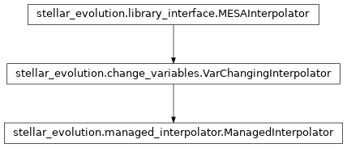

stellar_evolution.managed_interpolator module¶
Class Inheritance Diagram¶
Define a stellar evolution interpolator class managed through a database.
-
class
stellar_evolution.managed_interpolator.ManagedInterpolator(db_interpolator, serialization_path, db_session, **kwargs)[source]¶ Bases:
stellar_evolution.change_variables.VarChangingInterpolatorAdd properties describing the configuration of an interpolator.
-
__init__(db_interpolator, serialization_path, db_session, **kwargs)[source]¶ Create VarChangingInterpolator and add properties describing config.
Defines the following properties containing the information from db_interpolator:
- name:
- The human readable name of the interpolator
- _db_id:
- The ID of the interpolator in the database.
- filename:
- The filename from which the interpolator was read.
- nodes:
- A dictionary indexed by quantity giving the number of interpolation nodes used.
- smoothing:
- Same as nodes but for the smoothing arguments.
- suite:
- The software suite used to generate the tracks on which the interpolator is based.
- track_masses:
- List of stellar masses on whose tracks the interpolation is based.
- track_feh:
- List of stellar [Fe/H] on whose tracks the interpolation is based.
Parameters: - db_interpolator (-) – SerializedInterpolator instance from which to initialize self.
- serialization_path (-) – The directory where serialized interpolators are stored.
- Keyword only arguments:
- If not an empty dictionary, the underlying interpolator is constructed using those instead of the serialized filename.
Returns: None
-
_add_grid_variable(variable)[source]¶ Prepares to use another dependent variable to change from.
Args: see VarChangingInterpolator._add_grid_variable.
Returns: None
-
_add_variable_to_db(variable, db_session)[source]¶ Add pre-calculated node values of a variable to DB.
-
_new_var_change_grid(*, grid_name, feh, masses, ages, db_session)[source]¶ Create a new grid with the given nodes and register it with the DB.
Parameters: - grid_name – The name to assign to the new grid in the database.
- feh – The [Fe/H] values at which to tabulate the dependent variables.
- masses – The stellar masses at which to tabulate the dependent variables.
- ages – The ages (in Gyrs) at which to tabulate the dependent variables.
- db_session – A database session to submit queries to.
Returns: None
-
_read_variable_from_db(variable, db_session)[source]¶ Read the given variable’s grid values from the DB.
Parameters: - variable_name (-) – The name of the variable to add.
- db_session (-) – A database session for queries.
Returns: None, but has the same effect as calling VarChangingInterpolator._add_grid_variable, but finishes much faster.
-
_set_var_change_grid(grid_name, db_session)[source]¶ Read a varchange grid from the DB and set the interpolator to use it.
See VarChangingInterpolator._define_var_change_grid for newly created members of self.
Parameters: - grid_name (-) – The name of the grid in the database to read.
- db_session (-) – A database session for queries.
Returns: True if a grid with the given name exists, False otherwise.
-
static
_variable_db_id(variable, db_session, must_exist=True)[source]¶ Return the ID of the given varibale in the database.
Parameters: - variable (-) – The name of the variable whose ID to return.
- must_exst (-) – If False, and the variable is not yet in the varchange_dependent_variables table, a new entry is added. Otherwise, an exception is raised if it is not there.
Returns: The ID of the variable in the database.
Return type: - variable_db_id
-
-
stellar_evolution.managed_interpolator.checksum_filename(fname)[source]¶ Return a str checksum of the file with the given name.
-
stellar_evolution.managed_interpolator.verify_checksum(filename, checksum, what)[source]¶ Check if the given file has the expected checksum.
Parameters: - filename – The name of the file whose checksum to verify.
- checksum – The expected value of the checksum.
- what – What is being verified (only used if error message if checksums do not match).
Returns: None